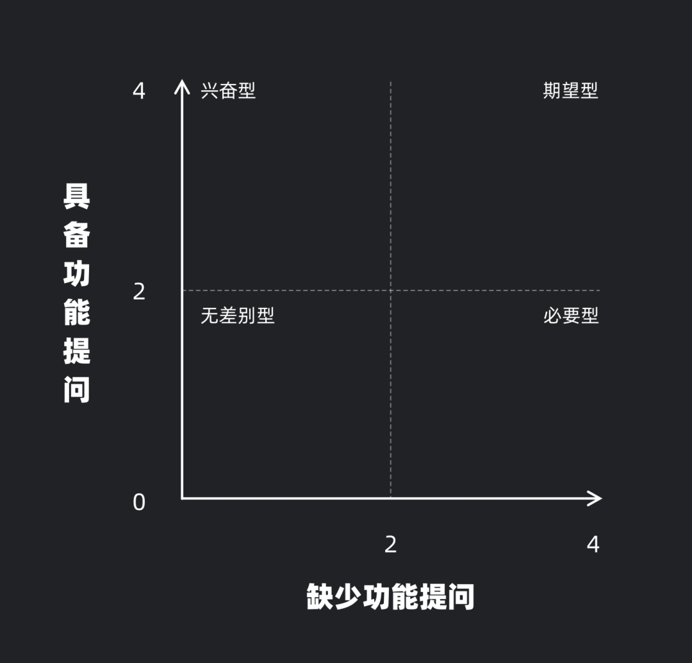

1. 简介
- KANO模型：对用户需求分类和优先排序的有用工具，以分析用户需求对用户满意的影响为基础，体现了产品性能和用户满意度之间的非线性关系。
- 即帮助定义需求影响力的工具，通过定义评价的标准，来衡量每条需求可能对用户造成的实质影响。
- KANO模型需求五属性：魅力、期望、必备、无差异、反向型，通过一定的分析步骤对每个属性进行打分，最终搞明白其属于哪一类型。
- 目的是为了辅助设计师更好地理解需求的有效性，为后续需求的优先级、工期、精细度安排做参考。
- KANO理念中，产品功能、服务的完成度，与用户满意度的相关性并不完全一致。
2. KANO需求类型
- 功能完成度和用户满意度二维坐标
- 通过一定的曲线、圆形区域表达五种需求类型
- 魅力型（Attractive Quality）：提供了会让用户惊喜，但是不提供用户满意度也不会受到影响。
- 会给用户带来意外惊喜的东西，如设计中的“情感化”设计，就是一种魅力型设计，通过一些有趣的交互、提示，来提升用户的满意度。
- 例子：拍一拍，非必要，但是可以大幅提高社交趣味性。
- 期望型（One-dimensional Quality）：用户非常渴望的功能，提供了用户满意度上升，反之则下降。
- 用户的主要诉求和痛点通常就是期望型设计。
- 例子：支付宝提供公交支付功能时，在上线之前，用户就希望扫码支付能得到统一的应用。
- 必备型（Must-be Quality）：提供了用户满意度不受影响，但是没提供则满意度大幅下降。
- 通常是一个应用最底层的功能，用户默认应用应该具有的功能。不符合预期会让用户极其不满意。
- 例子：聊天工具可以发表情、电商应用有购物车。在线支付操作中包含所有主流的支付方式/渠道——但京东、美团的支付选项中移除了支付宝，由此让用户感觉不可理喻。
- 无差异（Indifferent Quality）：无论是否提供，都不会有什么影响。
- 即无效需求。通常是一些拍脑门决定，或是用户反馈中没有的虚无建议和要求；抑或是一些追逐潮流做出来的功能。
- 例子：饿了么应用中的“真香”频道，在一个外卖应用中设直播和短视频频道。
- 反向型：提供了会导致用户满意度下降。
- 让用户方案的功能，通常是刚愎自用的决策者根据自己的喜好添加的需求，但通常是为了促进转化或者流量强加给用户的一些功能。
- 例子：百度、UC浏览器等不满足于将搜索框和收藏放在首页的核心位置，而是一定要加入新闻流媒体来消耗用户的注意力。
3. KANO评价系统
- 通过获取用户对有或者没有的功能打分，来判断其属于哪一个类型。
- 另外会使用四分位Better-Worse系数坐标轴评价，通过对相关系数进行计算将需求置入对应坐标象限。
- Better、Worse 系数分别代表了在增加和缺少该功能后，用户的评分。但这个评分的数值不再是 1-5 这么简单，而要通过一定的计算来完成，公式如下：
- Better/SI=（A+O）/(A+O+M+I)
- Worse/DSI=-1（O+M）/(A+O+M+I)
- 通常使用两者结合的方法，结合两方法优点，创造一种新的坐标体系。

- 根据方法一的数值，将功能对应分配到列表中，即可以获得一个直观的需求影响力图表。根据可视化的原理，对需求的其它权重或分类进行表现，例如使用色彩或大小进行区分，让图表可以更直观。
4. 局限性
- KANO 模型只是需求分析中的其中一个环节，用来帮助团队更好的理解需求的属性，但并不是代表需求的理解仅此而已。
- 同时，KANO 模型的可信度是建立在准确的用户打分之上，这是一个非常严苛的要求，不仅需要非常有效的实验、调研计划制定，同时受限于样本数会导致置信区间过大（评分误差），置信度极低。
- 在以效率为导向的团队协作中，除非是非常重要的功能，否则使用用户画像、卡片等工具进行大致的推导即可。
- KANO 的应用场景多种多样，需要大家根据实际应用场景进行调整。尤其对于设计师来说，KANO 不是一个我们教育 PM 怎么做需求的工具（某种情况下可以），而是辅助团队对需求的影响力有清晰认识的方法，帮助团队做出更有效的决策。